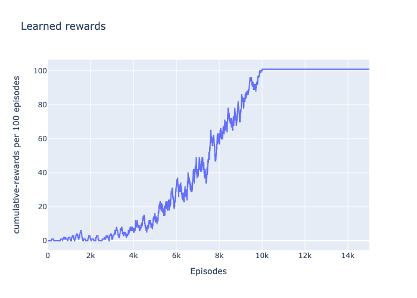
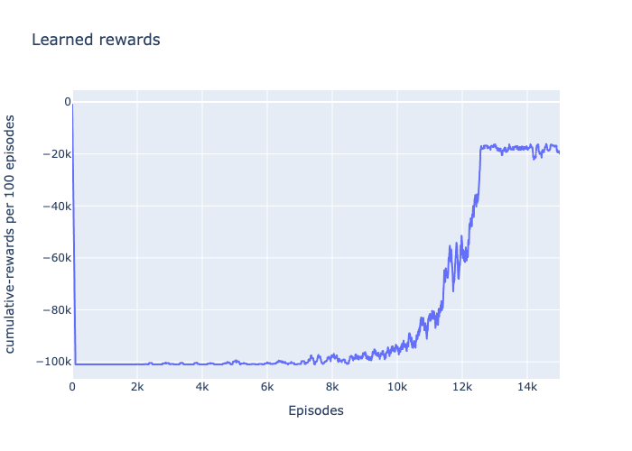
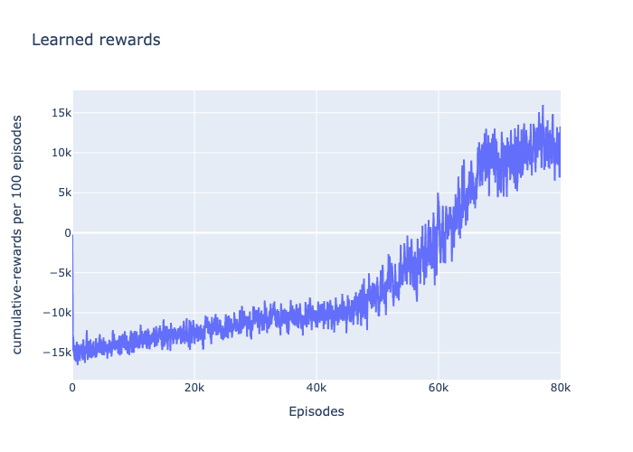

Reinforcement learning on OpenAI gym environments
(I built tables...to operate on discrete and continuous problems)
Reinforcement Learning: The agent-environment loop
 The agent selects an action based on a policy for the current observation in environment. The environment determines the reward and the next observation. The cycle then repeats itself until the environment ends (terminates).
The agent selects an action based on a policy for the current observation in environment. The environment determines the reward and the next observation. The cycle then repeats itself until the environment ends (terminates).
Reinforcement Learning: The goal
- Observe current state
- Take an action based on a policy
- Receive a reward for the action taken
- Update policy based on previous action/rewards
- Repeat till optimal policy is found
Q-learning
- The Agent attempts to construct an optimal policy (a look-up table) by continuously interacting and learning more about the environment.
- An optimal policy in the sense of maximizing the expected value of the total reward over any and all successive steps (state/action pair)
- Maximizing rewards for each action/state pair means we have the optimal policy -> we know exactly what to do at each state.
Q-learning


Q-learning: update
Update Q values with bellman equation
if self.random_rng.random() < self.epsilon:
return actions.sample()
else:
return np.argmax(self.Q[state, :])
Simple environments: FrozenLake
- ACTIONS: Up, Down, Right, Left
- REWARDS: Hole-0, Frozen-0, Goal-1
- EPISODE END: Hole, Goal

Simple environments: FrozenLake
But it only works on boring grids?
What about anything even slightly more complex and continuous?
Painfully discretize states and actions and create a gigantic Q-table
continuous environments: MountainCar
- ACTIONS: [-1,0,1] (Miniscule directional force)
- STATES: {p,v} (continuous position-velocity space)
- REWARDS: -0.1*action^2 per action; +100 goal
- EPISODE END: outside bounds, Goal, # actions
MountainCar: Build Q-table on discrete states
self.state_discrete_space = [
np.linspace(
self.gym_env.observation_space.low[i],
self.gym_env.observation_space.high[i],
self.discretize_grid_length,
)
for i in range(len(self.gym_env.observation_space.high))
]
MountainCar: Build Q-table on discrete states
2D environments?
- ACTIONS: [0,1,2,3] (Directional force)
- STATES: {p, v, legs_ground} (continuous 8D vector)
- REWARDS: Multi-faceted
- +/- the closer/further to the pad
- +/- the slower/faster
- - tilt
- +10 for each leg on ground
- -0.03 for firing side engine
- -0.3 for firing main engine
- EPISODE END: crash, outside bounds, Goal
2D environments?
Lot of manual tries to understand what needs more discretization and where we can save compute time. Lot of hyperparameter tuning....... BUT doable, and fun when it does work!!
LunarLander: Build Q-table on discrete states (First 20k iterations)
LunarLander: Build Q-table on discrete states (Remaining iterations)
LunarLander: Build Q-table on discrete states (towards the end)
Point of View
Press ESC to enter the slide overview.
Hold down the alt key and click on any element to zoom towards it using zoom.js. Click again to zoom back out.